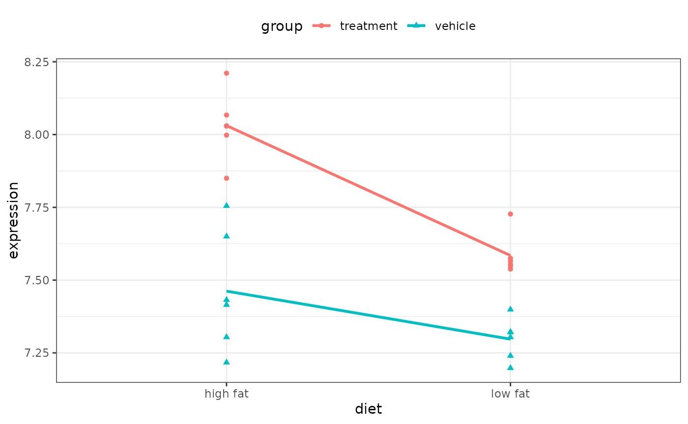
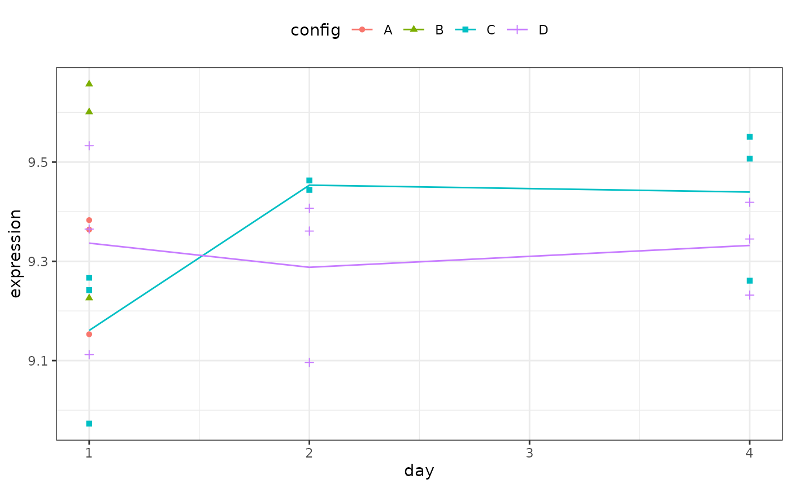

Introduction
The purpose of the contrast package is to provide a
standardized interface for testing linear combinations of parameters
from common regression models. The syntax mimics the
contrast.Design function from the Design
library. The contrast class has been extended in this package to linear
models produced using the functions lm, glm,
gls, lme and geese. Other
R functions with similar purposes exist in R,
but the interfaces are different and many require the user to specify
the contrast in terms of the parameter contrast coefficient vector. This
package aims to simplify the process for the user.
Contrasts
First, some notation:
\begin{aligned} n &= \text{number of samples} \notag \\ p &= \text{number of model parameters associated with fixed effects (excluding the intercept)} \notag \\ q &= \text{number of covariance parameters with random effects or correlations } \notag \\ Y &= \text{$n\times 1$ response vector} \notag \\ X &= \text{$n\times (p+1)$ model matrix} \notag \\ \beta &= \text{model parameters associated with fixed effects} \notag \\ \Sigma &= \text{covariance matrix associated with the fixed effects} \notag \\ \end{aligned}
This package uses one degree of freedom Wald tests to calculate p–values for linear combinations of parameters. For example, the basic linear model is of the form y=X\beta+\epsilon, where the individual errors are assumed to be iid N(0, \sigma^2). Ordinary least squares provides us with estimates \hat{\beta}, \hat{\sigma}^2 and \hat{\Sigma}. Given a (p+1)\times 1 vector of constants, c, we can estimate a linear combination of parameters \lambda = c'\beta by substituting the estimated parameter vectors: \hat{\lambda} = c'\hat{\beta}. Using basic linear algebra, Var[\lambda] = c'\Sigma c. The statistic generated for contrasts is
S = \frac{c'\hat{\beta}}{\sqrt{c'\hat{\Sigma} c}}
For linear models with normal errors, S\sim
T_{n-p-1} and there is no uncertainty about the distribution of
the test statistic and the degrees of freedom. In other cases, this is
not true. Asymptotics come into play for several models and there is
some ambiguity as to whether a t or
normal distribution should be used to compute p–values (See Harrell,
2001, Section 9.2 for a discussion). We follow the conventions of each
package: glm, gls and lme models
use a t distribution and a normal
distribution is used for gee models. For models where there
are extra covariance or correlation parameters, we again follow the lead
of the package. For gls model, the degrees of freedom are
n-p, while in lme models,
it is n-p-q.
The remainder of this document shows two examples and how the
contrast function can be applied to different models.
Linear Models
As an example, a gene expression experiment was run to assess the effect of a compound under two different diets: high fat and low fat. The main comparisons of interest are the difference between the treated and untreated groups within a diet. The interaction effect was a secondary hypothesis. For illustration, we only include the expression value of one of the genes.
A summary of the design:
library(contrast)
library(dplyr)
two_factor_crossed %>%
group_by(diet, group) %>%
count()
#> # A tibble: 4 × 3
#> # Groups: diet, group [4]
#> diet group n
#> <fct> <fct> <int>
#> 1 high fat treatment 6
#> 2 high fat vehicle 6
#> 3 low fat treatment 6
#> 4 low fat vehicle 6The study design was a two–way factorial with n=24:
#> `geom_smooth()` using formula = 'y ~ x'
The cell means can be labeled as:
| Low Fat | High Fat | |
|---|---|---|
| Vehicle | A |
B |
| Compound | C |
D |
The reference cell used by R is cell D: the treated samples on a high fat diet.
The model used is
\begin{aligned} \log\text{Expression}_2 &= \beta_0 \notag \\ & + \beta_1\text{Vehicle Group} \notag \\ & + \beta_2\text{Low Fat Diet} \notag \\ & + \beta_{3}\text{Low Fat Diet and Vehicle Group} \end{aligned}
so that p=3. Substituting the appropriate coefficients into each cell produces the parameters:
| Low Fat | High Fat | |
|---|---|---|
| Vehicle | \beta_0 + \beta_1 + \beta_2 + \beta_{3} | \beta_0 +\beta_1 |
| Compound | \beta_0 + \beta_2 | \beta_0 |
This means that
- \beta_2 tests for diet effect in the treated samples (C-D)
- \beta_1 tests for a compounds effect in the high fat diet samples (B-D)
Fitting the model specified by using lm():
lm_fit_1 <- lm(expression ~ (group + diet)^2, data = two_factor_crossed)
summary(lm_fit_1)
#>
#> Call:
#> lm(formula = expression ~ (group + diet)^2, data = two_factor_crossed)
#>
#> Residuals:
#> Min 1Q Median 3Q Max
#> -0.2452 -0.0467 -0.0145 0.0275 0.2928
#>
#> Coefficients:
#> Estimate Std. Error t value Pr(>|t|)
#> (Intercept) 8.0308 0.0522 153.90 < 2e-16 ***
#> groupvehicle -0.5687 0.0738 -7.71 2.1e-07 ***
#> dietlow fat -0.4463 0.0738 -6.05 6.5e-06 ***
#> groupvehicle:dietlow fat 0.2815 0.1044 2.70 0.014 *
#> ---
#> Signif. codes: 0 '***' 0.001 '**' 0.01 '*' 0.05 '.' 0.1 ' ' 1
#>
#> Residual standard error: 0.128 on 20 degrees of freedom
#> Multiple R-squared: 0.845, Adjusted R-squared: 0.821
#> F-statistic: 36.3 on 3 and 20 DF, p-value: 2.79e-08To test the treatment effect in the high fat diet, D-B = -\beta_1. This coefficient and
hypothesis test for the difference between treated and un-treated in the
high fat diet group is in the row labeled as groupvehicle
in the output of summary.lm().
To compare the compound data and the vehicle data in the low fat diet group, the information above can be used to derive that:
\begin{aligned} C - A &= \beta_0 + \beta_2 -(\beta_0+\beta_1+\beta_2+\beta_{3}) \notag \\ &= -\beta_1 - \beta_{3} \notag \end{aligned}
This hypothesis translates to testing \beta_1 + \beta_{3} = 0, or a contrast using c=(0, 1, 0, 1). To get the results of the difference between treated and un-treated in the low fat diet group, we (finally) use the contrast function:
high_fat <- contrast(lm_fit_1,
list(diet = "low fat", group = "vehicle"),
list(diet = "low fat", group = "treatment"))
print(high_fat, X = TRUE)
#> lm model parameter contrast
#>
#> Contrast S.E. Lower Upper t df Pr(>|t|)
#> -0.287 0.0738 -0.441 -0.133 -3.89 20 9e-04
#>
#> Contrast coefficients:
#> (Intercept) groupvehicle dietlow fat groupvehicle:dietlow fat
#> 0 1 0 1While the effect of treatment is significantly different when compared to vehicle for both diets, the difference is more pronounced in the high fat diet.
Alternatively, both test can be done in the same call to
contrast():
trt_effect <-
contrast(
lm_fit_1,
list(diet = levels(two_factor_crossed$diet), group = "vehicle"),
list(diet = levels(two_factor_crossed$diet), group = "treatment")
)
print(trt_effect, X = TRUE)
#> lm model parameter contrast
#>
#> Contrast S.E. Lower Upper t df Pr(>|t|)
#> -0.569 0.0738 -0.723 -0.415 -7.71 20 0e+00
#> -0.287 0.0738 -0.441 -0.133 -3.89 20 9e-04
#>
#> Contrast coefficients:
#> (Intercept) groupvehicle dietlow fat groupvehicle:dietlow fat
#> 0 1 0 0
#> 0 1 0 1Also, we can use the type argument to compute a single
treatment effect averaging over the levels of the other factor:
mean_effect <-
contrast(
lm_fit_1,
list(diet = levels(two_factor_crossed$diet), group = "vehicle"),
list(diet = levels(two_factor_crossed$diet), group = "treatment"),
type = "average"
)
print(mean_effect, X = TRUE)
#> lm model parameter contrast
#>
#> Contrast S.E. Lower Upper t df Pr(>|t|)
#> 1 -0.428 0.0522 -0.537 -0.319 -8.2 20 0
#>
#> Contrast coefficients:
#> (Intercept) groupvehicle dietlow fat groupvehicle:dietlow fat
#> 1 0 1 0 0.5Additionally, for ordinary linear regression models, there is an option to use sandwich estimates for the covariance matrix of the parameters. See the sandwich package for more details. Going back to our comparison of treated versus control in low fat samples, we can use the HC3 estimate in the contrast.
high_fat_sand <-
contrast(
lm_fit_1,
list(diet = "low fat", group = "vehicle"),
list(diet = "low fat", group = "treatment"),
covType = "HC3"
)
print(high_fat_sand)
#> lm model parameter contrast
#>
#> Contrast S.E. Lower Upper t df Pr(>|t|)
#> -0.287 0.0447 -0.38 -0.194 -6.43 20 0
#>
#> The HC3 covariance estimator was used.The t-statistic associated with the sandwich estimate is -6.427 versus -3.891 using the traditional estimate of the covariance matrix.
Generalized Linear Model
In this class of models, the distributional assumptions are expanded beyond the normal distribution to the general exponential family. Also, these models are linear in the sense that they are linear on a specified scale. The link function, denoted as \eta, is a function that defines how the linear predictor, x'\beta, enters the model. While there are several approaches to testing for statistical differences between models, such as the likelihood ratio or score tests, the Wald test is another method for assessing the statistical significance of linear combinations of model parameters. The basic Wald-type test uses the familiar statistic shown above to evaluate hypotheses. The distributional properties are exact for the normal distribution and asymptotically valid for other distributions in the exponential family. There are some issues with the Wald test (see Hauck and Donner, 1977). Whenever possible, likelihood ratio or score statistics are preferred, but these tests cannot handle some types of hypotheses, in which case the Wald test can be used.
For the previous example, it is customary to log transform gene expression data using a base of 2, we can illustrate contrasts in generalized linear models using the log (base e) link. In this case, the actual model being fit is \exp(x'\beta).
glm_fit_1 <- glm(2^expression ~ (group + diet)^2,
data = two_factor_crossed,
family = gaussian(link = "log"))
summary(glm_fit_1)
#>
#> Call:
#> glm(formula = 2^expression ~ (group + diet)^2, family = gaussian(link = "log"),
#> data = two_factor_crossed)
#>
#> Coefficients:
#> Estimate Std. Error t value Pr(>|t|)
#> (Intercept) 5.5693 0.0277 201.36 < 2e-16 ***
#> groupvehicle -0.3884 0.0493 -7.88 1.5e-07 ***
#> dietlow fat -0.3110 0.0468 -6.65 1.8e-06 ***
#> groupvehicle:dietlow fat 0.1893 0.0773 2.45 0.024 *
#> ---
#> Signif. codes: 0 '***' 0.001 '**' 0.01 '*' 0.05 '.' 0.1 ' ' 1
#>
#> (Dispersion parameter for gaussian family taken to be 316)
#>
#> Null deviance: 43574.7 on 23 degrees of freedom
#> Residual deviance: 6312.5 on 20 degrees of freedom
#> AIC: 211.8
#>
#> Number of Fisher Scoring iterations: 4
high_fat <-
contrast(glm_fit_1,
list(diet = "low fat", group = "vehicle"),
list(diet = "low fat", group = "treatment")
)
print(high_fat, X = TRUE)
#> glm model parameter contrast
#>
#> Contrast S.E. Lower Upper t df Pr(>|t|)
#> -0.199 0.0596 -0.323 -0.0749 -3.34 20 0.0032
#>
#> Contrast coefficients:
#> (Intercept) groupvehicle dietlow fat groupvehicle:dietlow fat
#> 0 1 0 1The coefficients and p-values are not wildly different given that the scale is slightly different (i.e. log_2 versus log_e).
Generalized Least Squares
In a second gene expression example, stem cells were differentiated using a set of factors (such as media types, cell spreads etc.). These factors were collapsed into a single cell environment configurations variable. The cell lines were assays over three days. Two of the configurations were only run on the first day and the other two were assays at baseline.
To get the materials, three donors provided materials. These donors provided (almost) equal replication across the two experimental factors (day and configuration). A summary of the design.
library(tidyr)
two_factor_incompl %>%
group_by(subject, config, day) %>%
count() %>%
ungroup() %>%
pivot_wider(
id_cols = c(config, day),
names_from = c(subject),
values_from = c(n)
)
#> # A tibble: 8 × 5
#> config day donor1 donor2 donor3
#> <fct> <dbl> <int> <int> <int>
#> 1 A 1 1 1 1
#> 2 B 1 1 1 1
#> 3 C 1 1 1 1
#> 4 C 2 1 NA 1
#> 5 C 4 1 1 1
#> 6 D 1 1 1 1
#> 7 D 2 1 1 1
#> 8 D 4 1 1 1The one of the goals of this experiment was to assess pre-specified differences in the configuration at each time point. For example, the differences between configurations A and B at day one is of interest. Also, the differences between configurations C and D at each time points were important.
Since there are missing cells in the design, it is not a complete two-way factorial. One way to analyze this experiment is to further collapse the time and configuration data into a single variable and then specify each comparison using this factor.
For example:
two_factor_incompl %>%
group_by(group) %>%
count()
#> # A tibble: 8 × 2
#> # Groups: group [8]
#> group n
#> <fct> <int>
#> 1 1:A 3
#> 2 1:B 3
#> 3 1:C 3
#> 4 1:D 3
#> 5 2:C 2
#> 6 2:D 3
#> 7 4:C 3
#> 8 4:D 3Using this new factor, we fit a linear model to this one-way design. We should account for the possible within-donor correlation. A generalized least square fit can do this, where we specify a correlation structure for the residuals. A compound-symmetry (a.k.a. exchangeable) correlation structure assumes that the within-donor correlation is constant.
The mdoel fit is:
gls_fit <- gls(expression ~ group,
data = two_factor_incompl,
corCompSymm(form = ~ 1 | subject))
summary(gls_fit)
#> Generalized least squares fit by REML
#> Model: expression ~ group
#> Data: two_factor_incompl
#> AIC BIC logLik
#> -6.19 0.889 13.1
#>
#> Correlation Structure: Compound symmetry
#> Formula: ~1 | subject
#> Parameter estimate(s):
#> Rho
#> 0.882
#>
#> Coefficients:
#> Value Std.Error t-value p-value
#> (Intercept) 9.30 0.0981 94.8 0.0000
#> group1:B 0.19 0.0477 4.1 0.0010
#> group1:C -0.14 0.0477 -2.9 0.0105
#> group1:D 0.04 0.0477 0.8 0.4536
#> group2:C 0.06 0.0540 1.2 0.2656
#> group2:D -0.01 0.0477 -0.3 0.8046
#> group4:C 0.14 0.0477 2.9 0.0103
#> group4:D 0.03 0.0477 0.7 0.5122
#>
#> Correlation:
#> (Intr) grp1:B grp1:C grp1:D grp2:C grp2:D grp4:C
#> group1:B -0.243
#> group1:C -0.243 0.500
#> group1:D -0.243 0.500 0.500
#> group2:C -0.214 0.441 0.441 0.441
#> group2:D -0.243 0.500 0.500 0.500 0.441
#> group4:C -0.243 0.500 0.500 0.500 0.441 0.500
#> group4:D -0.243 0.500 0.500 0.500 0.441 0.500 0.500
#>
#> Standardized residuals:
#> Min Q1 Med Q3 Max
#> -1.581 -0.727 0.430 0.609 1.155
#>
#> Residual standard error: 0.17
#> Degrees of freedom: 23 total; 15 residualIn this example, n=23 and p=8. This model estimates the residual variance and the within-subject correlation, so q=2. The default parameter estimates compare each group to the reference cell (day 1, configuration A). The summary table provides one of the p-values that we are interested in (configuration A vs. B at day 1). An example of obtaining the other p-values is shown below:
print(
contrast(
gls_fit,
list(group = "4:C"),
list(group = "4:D")
),
X = TRUE)
#> gls model parameter contrast
#>
#> Contrast S.E. Lower Upper t df Pr(>|t|)
#> 1 0.108 0.0477 0.00608 0.209 2.26 15 0.0392
#>
#> Contrast coefficients:
#> (Intercept) group1:B group1:C group1:D group2:C group2:D group4:C group4:D
#> 1 0 0 0 0 0 0 1 -1#> Warning: The `fun.y` argument of `stat_summary()` is deprecated as of ggplot2 3.3.0.
#> ℹ Please use the `fun` argument instead.
#> This warning is displayed once per session.
#> Call `lifecycle::last_lifecycle_warnings()` to see where this warning was
#> generated.
Linear Mixed Models via lme
A similar model can be fit using a linear mixed model via the
lme() function. In this case, we can add a random intercept
attributable to the donors. This can produce the above compound symmetry
model, but here the within donor-correlation is constrained to be
positive.
lme_fit <- lme(expression ~ group, data = two_factor_incompl, random = ~1|subject)
summary(lme_fit)
#> Linear mixed-effects model fit by REML
#> Data: two_factor_incompl
#> AIC BIC logLik
#> -6.19 0.889 13.1
#>
#> Random effects:
#> Formula: ~1 | subject
#> (Intercept) Residual
#> StdDev: 0.16 0.0584
#>
#> Fixed effects: expression ~ group
#> Value Std.Error DF t-value p-value
#> (Intercept) 9.30 0.0981 13 94.8 0.0000
#> group1:B 0.19 0.0477 13 4.1 0.0013
#> group1:C -0.14 0.0477 13 -2.9 0.0119
#> group1:D 0.04 0.0477 13 0.8 0.4555
#> group2:C 0.06 0.0540 13 1.2 0.2683
#> group2:D -0.01 0.0477 13 -0.3 0.8051
#> group4:C 0.14 0.0477 13 2.9 0.0117
#> group4:D 0.03 0.0477 13 0.7 0.5137
#> Correlation:
#> (Intr) grp1:B grp1:C grp1:D grp2:C grp2:D grp4:C
#> group1:B -0.243
#> group1:C -0.243 0.500
#> group1:D -0.243 0.500 0.500
#> group2:C -0.214 0.441 0.441 0.441
#> group2:D -0.243 0.500 0.500 0.500 0.441
#> group4:C -0.243 0.500 0.500 0.500 0.441 0.500
#> group4:D -0.243 0.500 0.500 0.500 0.441 0.500 0.500
#>
#> Standardized Within-Group Residuals:
#> Min Q1 Med Q3 Max
#> -1.484 -0.462 0.038 0.171 1.580
#>
#> Number of Observations: 23
#> Number of Groups: 3
print(
contrast(
lme_fit,
list(group = "4:C"),
list(group = "4:D")
),
X = TRUE)
#> lme model parameter contrast
#>
#> Contrast S.E. Lower Upper t df Pr(>|t|)
#> 1 0.108 0.0477 0.0047 0.211 2.26 13 0.0417
#>
#> Contrast coefficients:
#> (Intercept) group1:B group1:C group1:D group2:C group2:D group4:C group4:D
#> 1 0 0 0 0 0 0 1 -1Comparing this to the gls model results, the default
coefficients have identical parameter estimates, standard errors and
test statistics, but their p-values are
slightly different. This is due to the difference in how the degrees of
freedom are calculated between these models. The same is true for the
example contrast for the two models (15 versus 13 degrees of
freedom).
Generalized Estimating Equations
Yet another way to fit a model to these data would be to use a
generalized linear model-type framework using normal errors and a log
(base 2) link. To account for the within-donor variability, a
generalized estimating equation approach can be used. We use the
geese() function in the geepack package.
gee_fit <- geese(2^expression ~ group,
data = two_factor_incompl,
id = subject,
family = gaussian(link = "log"),
corstr = "exchangeable")
summary(gee_fit)
#>
#> Call:
#> geese(formula = 2^expression ~ group, id = subject, data = two_factor_incompl,
#> family = gaussian(link = "log"), corstr = "exchangeable")
#>
#> Mean Model:
#> Mean Link: log
#> Variance to Mean Relation: gaussian
#>
#> Coefficients:
#> estimate san.se wald p
#> (Intercept) 6.45772 0.02639 5.99e+04 0.00e+00
#> group1:B 0.13579 0.05026 7.30e+00 6.89e-03
#> group1:C -0.10870 0.02107 2.66e+01 2.49e-07
#> group1:D 0.02970 0.03896 5.81e-01 4.46e-01
#> group2:C 0.04652 0.00956 2.37e+01 1.13e-06
#> group2:D -0.01977 0.02398 6.80e-01 4.10e-01
#> group4:C 0.08521 0.02097 1.65e+01 4.83e-05
#> group4:D 0.00784 0.01492 2.76e-01 5.99e-01
#>
#> Scale Model:
#> Scale Link: identity
#>
#> Estimated Scale Parameters:
#> estimate san.se wald p
#> (Intercept) 3634 1393 6.8 0.0091
#>
#> Correlation Model:
#> Correlation Structure: exchangeable
#> Correlation Link: identity
#>
#> Estimated Correlation Parameters:
#> estimate san.se wald p
#> alpha 0.608 0.234 6.77 0.00925
#>
#> Returned Error Value: 0
#> Number of clusters: 6 Maximum cluster size: 7
print(
contrast(
gee_fit,
list(group = "4:C"),
list(group = "4:D")
),
X = TRUE)
#> geese model parameter contrast
#>
#> Contrast S.E. Lower Upper Z df Pr(>|Z|)
#> 1 0.0774 0.0295 0.0195 0.135 2.62 NA 0.0088
#>
#> Contrast coefficients:
#> (Intercept) group1:B group1:C group1:D group2:C group2:D group4:C group4:D
#> 1 0 0 0 0 0 0 1 -1For this model, a simple Wald test is calculated. The contrast shows a more significant p-value than the other models, partly due to the scale and partly due to the distributional assumptions about the test statistic.
Fold changes
The contrast() method also computes fold changes using
the follow process:
- For the two groups defined by the
aandbarguments, the predicted outcomes are computed. When the model objects is generated by eitherglmorgeese, the linear predictor is calculated. - The two predicted values are optionally transformed by the
fcFuncargument. For our gene expression example, we might use , while for generalized linear models we might use the inverse link function from thefamilyobject. - The predicted value for the
agroup is divided by the predicted value for thebgroup. - If the
fcTypeargument is"simple", the ratio is returned as the fold change.fcType = "log"returns the log (base e) of the ratio. If the type is"signed", a different calculation is used. If the simple ratio is less than one, the negative reciprocal of the ratio is returned; otherwise the fold change is equal to the simple ratio
The fold change results are contained in the output as
foldchange. From the first example:
trt_effect <-
contrast(lm_fit_1,
list(diet = levels(two_factor_crossed$diet), group = "vehicle"),
list(diet = levels(two_factor_crossed$diet), group = "treatment"),
fcfunc = function(u) 2^u
)
print(trt_effect, X = TRUE)
#> lm model parameter contrast
#>
#> Contrast S.E. Lower Upper t df Pr(>|t|)
#> -0.569 0.0738 -0.723 -0.415 -7.71 20 0e+00
#> -0.287 0.0738 -0.441 -0.133 -3.89 20 9e-04
#>
#> Contrast coefficients:
#> (Intercept) groupvehicle dietlow fat groupvehicle:dietlow fat
#> 0 1 0 0
#> 0 1 0 1
trt_effect$foldChange
#> [,1]
#> 1 0.929
#> 2 0.962